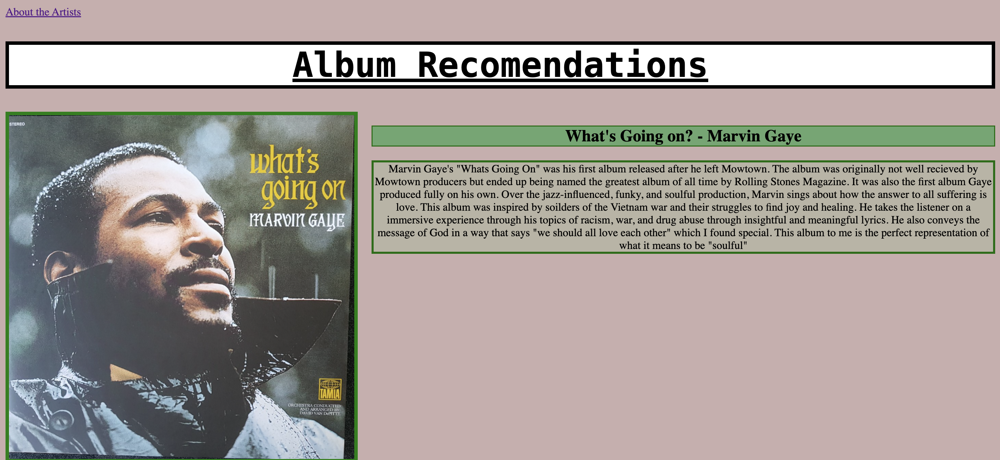

This prpject is my Album Recomendations by Ella website where I gave my reveiws on some of my favorite artists aswell as some descriptions of the artists. Through this, I have developed my problem solving skills and the ability to adapt to unforeseen changes I hope that from this course I can use these skills that I've learned in my life outside of the classroom and in any job I want to pursue. I learned that I am good at working around challenges. I was faced with many difficult moments and I pushed past them. I have found that I have a hard time with procrastination and I need to work on getting work done ahead of time so im not stressed out to do it last minute. In the future id like to be a musician, so making a website about music was one of my favorite things I've ever done.